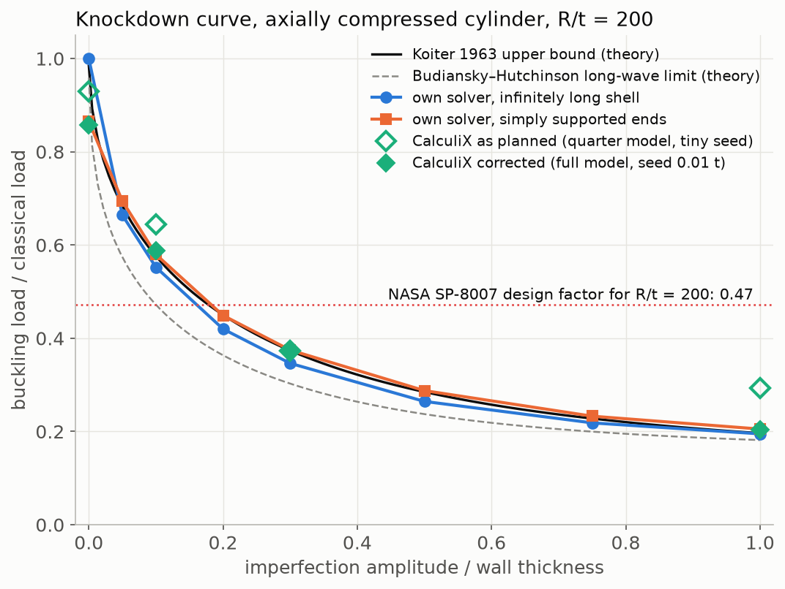
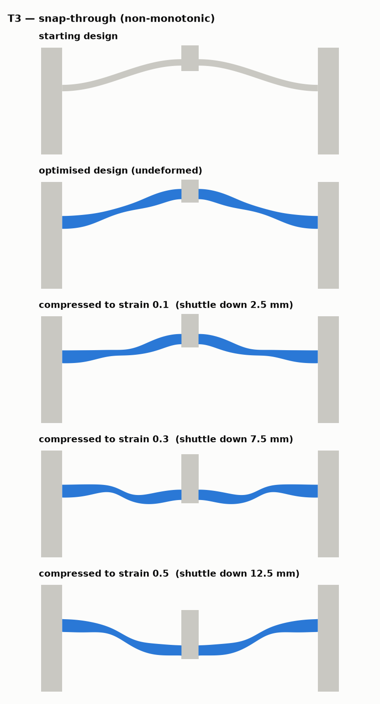

Phase 2 — three hard problems
14–15 November 2026 · instability, fracture, nonlinear inverse design
Phase 1 showed an AI agent can run routine structural simulations. Phase 2 asks whether it can handle problems where simulations usually go wrong: structures that snap and buckle, materials that crack, and designing a part whose behaviour depends on snapping. Each track ran on its own, set its pass marks before running, and was graded against published references, a second independent solver, or a real experiment.
Short version: the agent got correct answers on all three, but not cleanly. Of 36 pass marks set in advance, 32 were met and 4 were missed. In every track the first attempt at something went wrong in a way that only an independent check exposed.
Scorecard
| Track | What was tested | Result | Graded against |
|---|---|---|---|
| 7 · Instability | Following a structure through snap-through | 5 of 6 limit loads within 0.02 % | NAFEMS benchmark, published arch solution, CalculiX |
| Surface wrinkling threshold of compressed rubber | 2 of 2 matches theory to 7 digits, on the second method | Analytical value 0.4563 | |
| How much a tiny dent weakens a thin cylinder | 3 of 4 within 0.03 of theory | Koiter's theory, CalculiX | |
| 8 · Fracture | Crack growth in a notched plate, pulled and sheared | 12 of 12 peak loads within 1–7 % | Curves from four published papers |
| Blind prediction of how a 3D-printed beam breaks | mixed peak load 9 % low; crack path, displacement and failure mode right | Real experiment (Damage Mechanics Challenge) | |
| 9 · Inverse design | Trusting the solver first | 4 of 6 one force 10.8 % off the textbook formula | Qiu's bistable-beam formulas |
| Shape a rubber beam to follow three target curves | 3 of 3 error 0.25–2.0 % | CalculiX re-solve of each design | |
| Design a two-position (bistable) switch to spec | 3 of 3 within 0.2 %, on the sixth attempt | CalculiX re-solve |
Trial 7 — snapping and buckling


Trial 8 — cracking


Trial 9 — designing through a snap


What went wrong, and what caught it
| A converged wrong answer | The first wrinkling calculation settled on 0.322 across three meshes. The right value is 0.456. A count of unstable modes exposed a numerical artefact in the element type. |
| A badly chosen pass mark | One frame check compared load where the curve is nearly vertical, so a 0.4 % position error became a 24 % miss. It stays recorded as a miss. |
| The second solver was wrong, not the first | CalculiX stepped over the cylinder's buckling point and its symmetry shortcut made the shell 7 % too stiff. A full model agrees to 1.4 %, but that rerun is outside the grade. |
| A pass that leans on a wide tolerance | The shear fracture result passes at ±10 %, but refining the load step would likely have failed one check. |
| Blind prediction too low | One fracture-energy value fitted to four calibration beams left errors of −9 % to +8 % on those beams, and the unseen beam came out 9 % low. |
| Gradients blind at a snap | Five optimisation attempts on the bistable switch stalled. The gradient is exact along a path but cannot see a snap appear or move. Attempt six worked after a manual diagnosis. |
| The planned challenge was unreachable | The Sandia Fracture Challenge data needs a Globus login, so the blind test used the Damage Mechanics Challenge instead: a brittle beam, an easier exam than ductile steel. |
Limits on these results
- The blind-challenge outcome is read off figures in the results paper by eye (about ±10 N); the exact data sit behind a login.
- The cylinder result depends on the modelled length; a four times longer section lands just outside tolerance.
- The designed beams are sensitive to manufacturing error: with small shape errors only 62–88 % of copies stay within tolerance. Nothing was printed or tested.
- The three design targets turned out easy for this beam; a harder set would be a better test.
Next
- Get a Globus account and run the Sandia Fracture Challenge as planned, and re-grade the beam prediction on the exact data.
- Harder design targets, and print and test one design.
- Contact and real-data material identification, the two tracks not yet started.